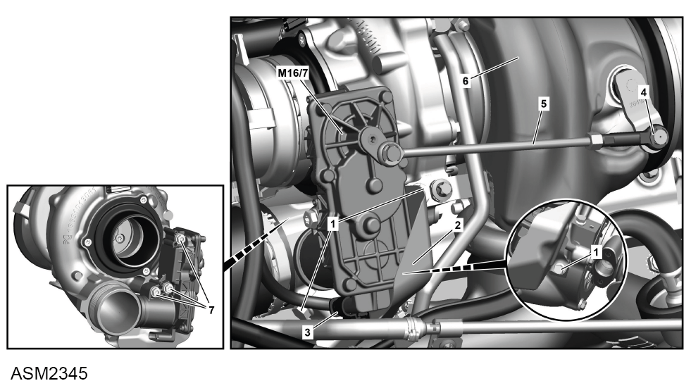

Actuator Motor - 4 Cylinder
Print
Operation Code: 40.21.19-02
Removal
- Remove engine cover. Refer to procedure.

- Remove bolts (1) (x3) securing heatshield (2) to turbocharger (6). Torque 8 Nm.
- Remove heatshield.
- Disconnect harness connector (3) from actuator motor.
- Remove retaining washer (4) securing linkage (5) to turbocharger.
- Release linkage from turbocharger.
- Remove bolts (7) (x3) securing actuator motor to turbocharger. Torque 9 Nm.
- Remove actuator motor.
Installation
- Installation is the reverse of removal procedure except for the following:
- After installation perform a diagnostic read and clear error memory using Lotus Insight tool.